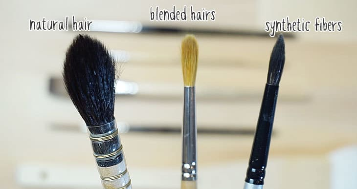

In ancient times, humans used their fingers, sticks, bones, and other simple tools made with feathers or animal hair to apply the paints for their cave paintings. Since then, the modern watercolor brush has evolved considerably.
There are three parts to the paint brush. The tuft is the part that is used to pick up the paint and apply it to the paper. It is made of a bundle of animal hairs or synthetic fibers (or even sometimes a blend of both) that are tied tightly together at the base of the brush. The ferrule is a little metal or plastic sleeve that goes around the tuft and gives the tift its shape, provides the mechanical support from pressure, and protects the glued area between the base of the tift and the handle from water damage. The handle is usually made from wood or plastic and it is typically made to be shorter in a watercolor brush than in an acrylic or oil painting brush. One distinct feature of the watercolor brush is it has a distint shape that is widest in the area just behind the ferrule and then tapers to the tip. Another distinct feature of the watercolor brush that sets it apart from other brushes are the bristles. The bristles are picked for their softness and how absorbent they are. Since watercolor uses water with its paints, the brush needs to be able to handle anywhere from a little bit of water to a lot of water. The more water that is used, the thinner and more transparent of a wash we are able to create with the paint. The less water that is used, the more richer and opaque the colors are and it allows layering to get more depth to your watercolor paintings.